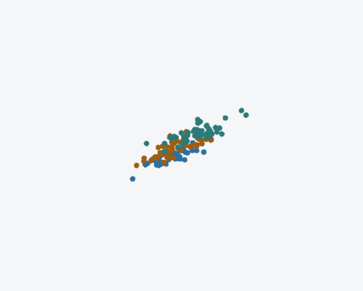

Projecting four dimensions and drawing tilings
Source:vignettes/articles/higher-dimensions.Rmd
higher-dimensions.RmdA plot can show three position axes at once. Data with a fourth
coordinate can still be drawn by projecting it into three dimensions, by
rotating it so the projection changes, or by cutting it with a
hyperplane and drawing the three-dimensional section. Regular tilings
and honeycombs fill the plane and space with copies of one polygon or
polyhedron, and are generated by reflections in the same way.
Installation is covered in Get started, and
Animating cameras and data introduces
animate_3d().
Projecting four dimensions
The sixteen corners of a tesseract, the four-dimensional cube, are
the points with every coordinate
.
A fourth position is mapped to w.
stat_project_3d() drops the fourth coordinate after
applying a rotation; without a rotation the corners fall onto the eight
corners of a cube, each twice.
tesseract <- expand.grid(x = c(-1, 1), y = c(-1, 1), z = c(-1, 1), w = c(-1, 1))rotate_4d("xw", 0.5) rotates by 0.5 radians in the plane
spanned by the x and w axes. Rotations in four dimensions turn a plane,
not an axis, so the y-z plane stays fixed while x and w mix, and the two
copies of the cube separate.
ggplot(tesseract, aes(x, y, z = z, w = w)) +
stat_project_3d(rotation = rotate_4d("xw", 0.5), size = 3, colour = "#2E6F9E") +
coord_3d()A general rotation in four dimensions is the product of a left and a
right unit quaternion, and rotate_4d(left = , right = )
builds it from those two.
Grand tours
A grand tour moves smoothly through random projections of
high-dimensional data, so that every direction is eventually seen
(Wickham et al. 2011).
grand_tour_3d() describes the tour and
animate_3d(tour = ) renders it. The iris measurements have
four columns, standardised here so that each contributes on the same
scale.
measures <- data.frame(scale(iris[1:4]), Species = iris$Species)
flowers <- ggplot(measures, aes(Sepal.Length, Sepal.Width, z = Petal.Length,
w = Petal.Width, colour = Species)) +
stat_project_3d(size = 2) +
scale_colour_manual(values = c("#2E6F9E", "#9E5E0F", "#2A7A7A")) +
coord_3d(axes = character(), panes = character(), box = "none")
tour <- animate_3d(flowers, tour = grand_tour_3d(steps = 40, seed = 1),
fps = 10, format = "gif", width = 600, height = 480, dpi = 100)
tour

Sections of four-dimensional meshes
A hyperplane
cuts a four-dimensional solid in a three-dimensional section, as a plane
cuts a solid in a polygon. stat_section_4d() cuts a mesh of
tetrahedral cells. The simplest four-dimensional solid, the 4-simplex,
has five vertices and five tetrahedral cells, one for each choice of
four vertices.
simplex <- data.frame(x = c(0, 1, 0, 0, 0), y = c(0, 0, 1, 0, 0),
z = c(0, 0, 0, 1, 0), w = c(0, 0, 0, 0, 1))
cells <- t(utils::combn(5, 4))
ggplot(simplex, aes(x, y, z = z, w = w)) +
stat_section_4d(cells = cells, offset = 0.3, fill = "#3F7A3D") +
coord_3d()At offset = 0.3 the hyperplane cuts four of the five
cells, and their sections close up into a tetrahedron. Moving the offset
slides the hyperplane through the solid, and the section shrinks to a
point as it leaves.
Regular tilings
The Schläfli symbol
names the regular tiling in which
regular
-gons
meet at every vertex. When
the tiling is flat, such as
for squares; when the sum is smaller, the angles do not close in the
plane and the tiling lives in the hyperbolic plane.
stat_tiling_3d() generates it by repeated reflection in the
sides of one triangle and draws it in the Poincaré disc (Nelson and
Segerman 2016).
ggplot() +
stat_tiling_3d(schlafli = c(7, 3), radius = 2, colour = "#2E6F9E") +
coord_3d(axes = character(), panes = character(), box = "none", elevation = 90)
#> 15 cells in hyperbolic 2-spaceThree heptagons meet at each vertex. They have the same hyperbolic size; the disc model makes them shrink toward its rim.
Honeycombs
Three numbers
name a honeycomb of space:
polyhedra,
of them around each edge. In
four dodecahedra meet at each edge, which does not close in flat space
but does in hyperbolic space. stat_honeycomb_3d() draws its
cells up to a hyperbolic radius from the centre.
ggplot() +
stat_honeycomb_3d(schlafli = c(5, 3, 4), radius = 1, what = "faces",
fill = "#9E5E0F", alpha = 0.5) +
coord_3d(axes = character(), panes = character(), box = "none")
#> 1 cells in hyperbolic 3-spacePlotting curved spaces and spacetime shows the coordinate systems for drawing other data in hyperbolic and spherical space.
References
Nelson, R. and Segerman, H. (2016). Visualizing hyperbolic honeycombs. https://arxiv.org/abs/1511.02851
Wickham, H., Cook, D., Hofmann, H. and Buja, A. (2011). tourr: an R package for exploring multivariate data with projections. Journal of Statistical Software 40(2). https://doi.org/10.18637/jss.v040.i02